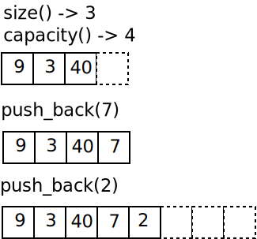
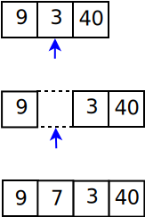

vector<>¶
Characteristics¶
std::vector<> is an efficient sequential container because …
Organization: contiguous memory ⟶ perfect utilization of processor caches
Appending is performs liek with strings (logarithmic time)
But …
Removal at arbitrary position is slow
Insertion at arbitrary position is slow
⟶ Unwanted copies
Modification at the Back¶
|
 |
Insertion¶
Performance is miserable!
|
 |
Example¶
#include <vector>
#include <iostream>
using namespace std;
int main()
{
std::vector<int> mein_int_array;
cout << mein_int_array.size() << endl;
cout << mein_int_array.capacity() << endl;
mein_int_array.push_back(100);
cout << mein_int_array[0] << endl;
cout << mein_int_array.at(0) << endl;
// undefined behavior?
// cout << "[1]: " << mein_int_array[1] << endl;
// cout << ".at(1): " << mein_int_array.at(1) << endl;
cout << mein_int_array.size() << endl;
cout << mein_int_array.capacity() << endl;
mein_int_array.push_back(200);
cout << mein_int_array.size() << endl;
cout << mein_int_array.capacity() << endl;
mein_int_array.push_back(300);
cout << mein_int_array.size() << endl;
cout << mein_int_array.capacity() << endl;
mein_int_array.push_back(400);
cout << mein_int_array.size() << endl;
cout << mein_int_array.capacity() << endl;
mein_int_array.push_back(800);
cout << mein_int_array.size() << endl;
cout << mein_int_array.capacity() << endl;
mein_int_array.push_back(900);
mein_int_array.push_back(1000);
mein_int_array.push_back(1100);
cout << mein_int_array.size() << endl;
cout << mein_int_array.capacity() << endl;
mein_int_array.push_back(1200);
cout << mein_int_array.size() << endl;
cout << mein_int_array.capacity() << endl;
cout << mein_int_array.front() << endl;
cout << mein_int_array.back() << endl;
cout << "CONTENT:" << endl;
for (size_t i=0; i<mein_int_array.size(); i++)
cout << " " << mein_int_array[i] << endl;
// insert at pos 4
std::vector<int>::iterator insert_pos = mein_int_array.begin();
insert_pos += 4;
mein_int_array.insert(insert_pos, 500);
cout << "CONTENT:" << endl;
for (size_t i=0; i<mein_int_array.size(); i++)
cout << " " << mein_int_array[i] << endl;
// now insert [600, 700] in position 5 (800)
#define NEW_ELEMS_AS_VECTOR
#ifdef NEW_ELEMS_AS_VECTOR
cout << "using vector to insert" << endl;
std::vector<int> elems_to_insert = { 600, 700 };
mein_int_array.insert(mein_int_array.begin() + 5, elems_to_insert.begin(), elems_to_insert.end());
#else
cout << "using C array to insert" << endl;
int elems_to_insert[] = { 600, 700 };
mein_int_array.insert(mein_int_array.begin() + 5, elems_to_insert, elems_to_insert+2);
#endif
cout << "CONTENT:" << endl;
for (size_t i=0; i<mein_int_array.size(); i++)
cout << " " << mein_int_array[i] << endl;
return 0;
}